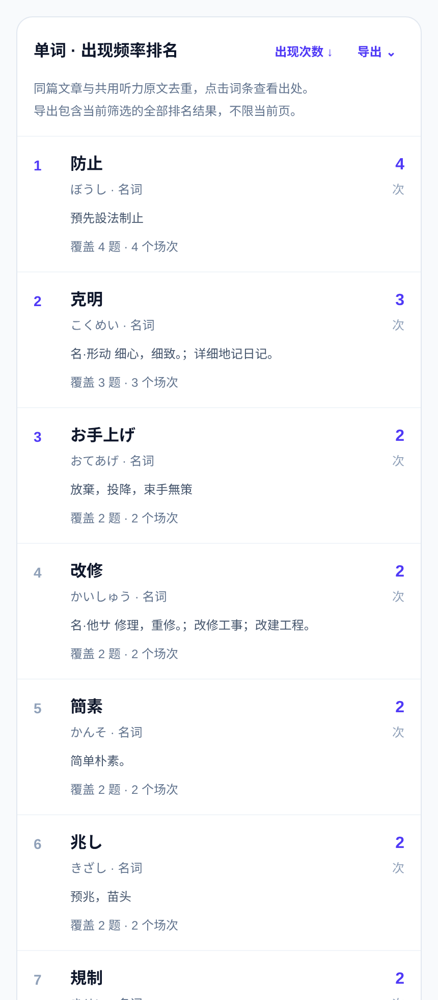
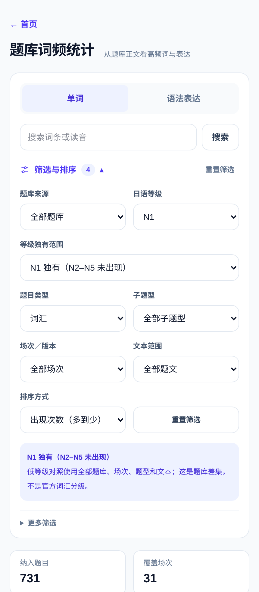
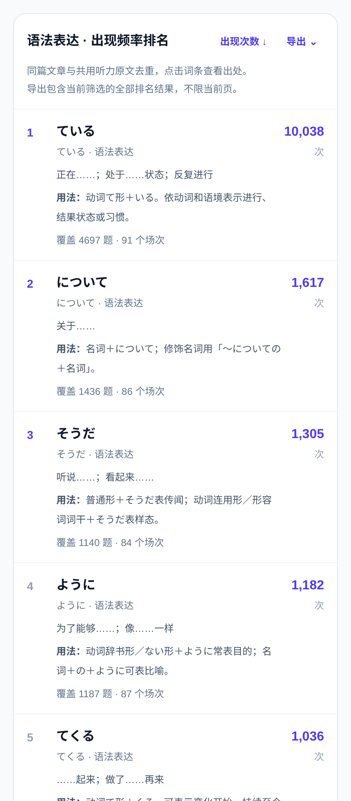
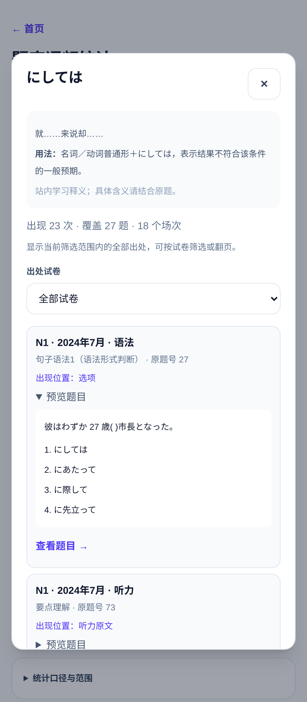
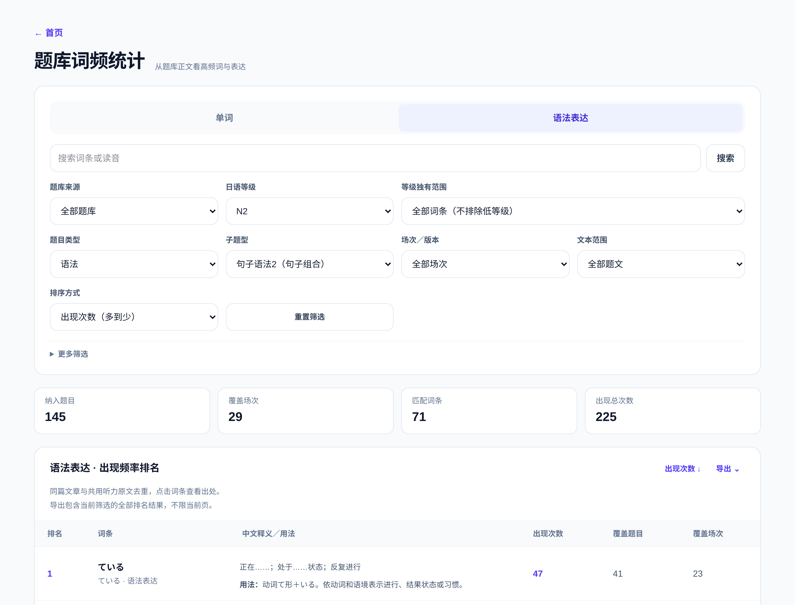
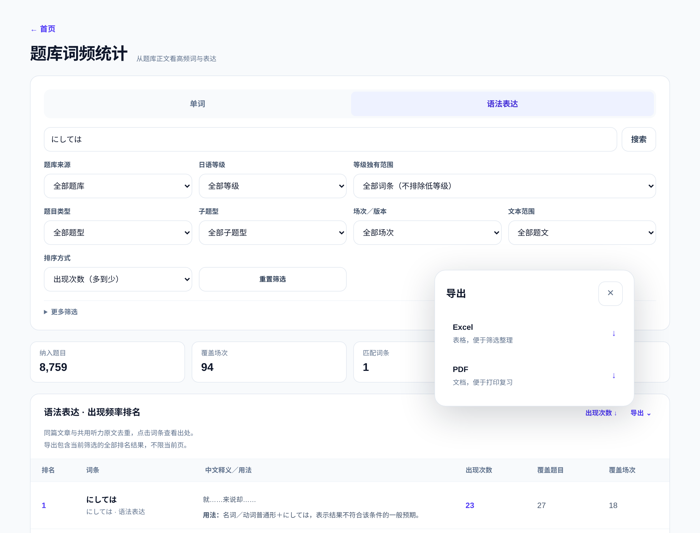
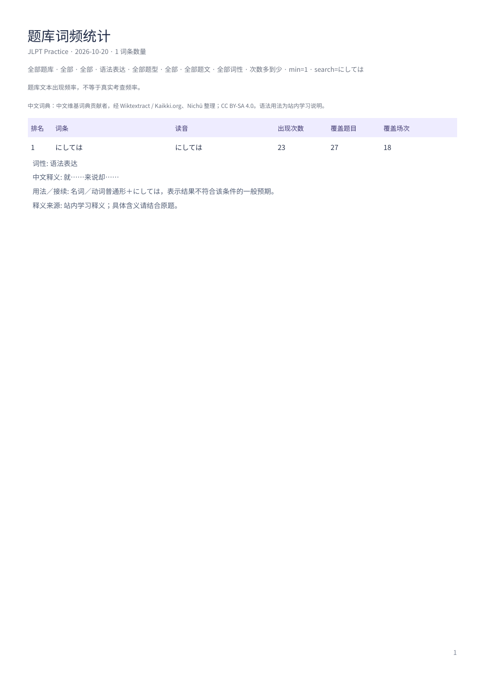

JLPT｜词汇 × 语法
复习整理工具 01 / 06
考试词汇、语法，
整理好再复习。
自己做的日语复习工具｜查词、看用法、回到原题
给复习留一份清单
从考试题文中，
整理出现过的词与表达。
按等级、年份、题型筛选。
看中文释义，记语法用法。
点开词条，找到原题。

自己做的日语复习工具｜查词、看用法、回到原题
从考试题文中，
整理出现过的词与表达。
按等级、年份、题型筛选。
看中文释义，记语法用法。
点开词条，找到原题。

筛选目标等级，排除低等级题库已出现的词。
排除也在 N2–N5
题库中出现的词。
排除也在 N3–N5
题库中出现的词。
年份、官方子题型、词性
按需要组合筛选。

把表达、中文含义和使用方式放在一起。
查看语法表达的中文含义。
名词怎么接？动词用什么形？
用法说明一起看。
点开表达，查看出处，
到原题中再确认一次。

从一个词条，找到它出现过的卷子和题目。
看中文含义、语法用法，
以及出现记录。
等级、年月、题型、原题号
清楚标出。
先预览，也能打开原题，
核对前后的语境。

等级、场次、官方子题型、词性，都能组合查看。

筛好范围，选择 Excel 或 PDF，一份带走。


整理一份属于自己的复习资料。